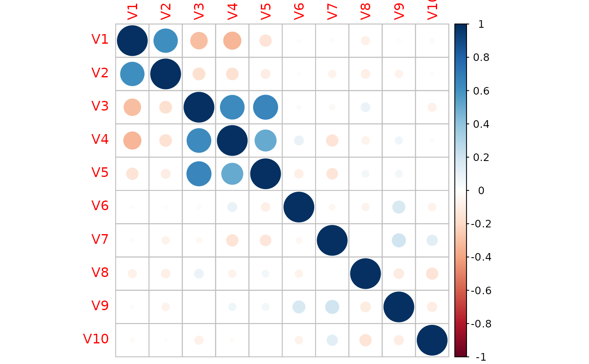
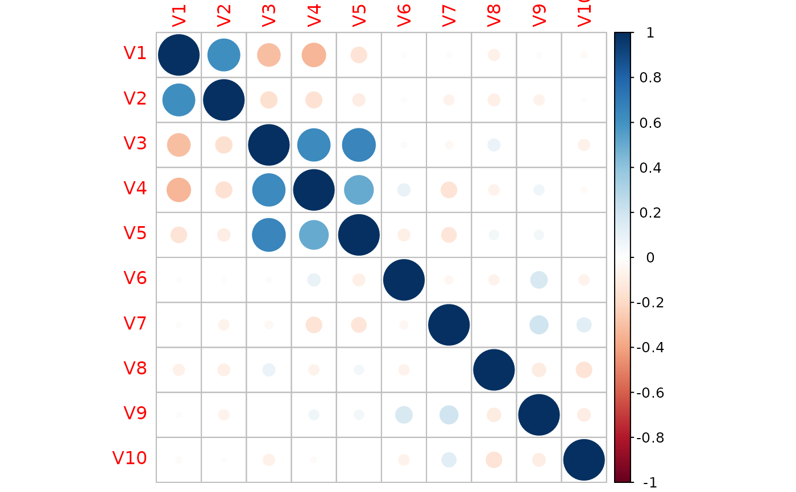

This function generates inputs X given by the response variable y
using a multivariate normal model.
Arguments
- n
Number of observations.
- muj
C by p matrix, with row c representing y = c, and column j representing \(x_j\). Used to specify
y.- A
Factor loading matrix of size p by p, see details.
- sd_g
Numeric value indicating noise level \(\delta\), see details.
- stdx
Logical; if
TRUE, dataXis standardized to havemean = 0andsd = 1.
Value
A list contains input matrix X, response variables y,
covariate matrix SGM and muj (standardized if stdx = TRUE).
Details
The means of each covariate \(x_j\) depend on y specified by the
matrix muj; the covariate matrix \(\Sigma\) of the multivariate normal
is equal to \(AA^t\delta^2I\), where A is the factor loading matrix
and \(\delta\) is the noise level.
Examples
## feature #1: marginally related feature
## feature #2: marginally unrelated feature, but feature #2 is correlated with feature #1
## feature #3-5: marginally related features and also internally correlated
## feature #6-10: noise features without relationship with the y
set.seed(12345)
n <- 100
p <- 10
means <- rbind(
c(0, 1, 0),
c(0, 0, 0),
c(0, 0, 1),
c(0, 0, 1),
c(0, 0, 1)
) * 2
means <- rbind(means, matrix(0, p - 5, 3))
A <- diag(1, p)
A[1:5, 1:3] <- rbind(
c(1, 0, 0),
c(2, 1, 0),
c(0, 0, 1),
c(0, 0, 1),
c(0, 0, 1)
)
dat <- gendata_FAM(n, means, A, sd_g = 0.5, stdx = TRUE)
ggplot2::qplot(dat$y, bins = 6)
#> Warning: `qplot()` was deprecated in ggplot2 3.4.0.
 corrplot::corrplot(cor(dat$X))

corrplot::corrplot(cor(dat$X))
